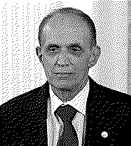

| годы жизни | р. 1938 |
| страна | США · Стэнфорд |
| область | математическая статистика |
| главное | бутстрэп (1979) · эмпирический байес |
| характер | назвал метод в честь барона, вытащившего себя за шнурки |
Он позволил выборке вытащить себя саму.
1979 год — и погрешность стало можно считать почти для чего угодно.
До конца 1970-х доверительный интервал умели строить в основном для среднего — там выручала центральная предельная теорема. Для медианы, отношения, коэффициента корреляции честной погрешности либо не было вовсе, либо она держалась на допущениях, которые в реальных данных не выполняются.
Брэдли Эфрон, статистик из Стэнфорда, предложил ход, похожий на фокус1. Настоящего распределения мира нет — прими за него саму выборку и тяни из неё новые выборки, с возвращением, тысячу раз. Разброс полученных оценок и есть искомая неопределённость. Ни выкладок, ни формул — только пересчёт.
«Статистика — это наука о том, как учиться на опыте.» — Брэдли Эфрон
Имя он взял у барона Мюнхгаузена, вытащившего себя из болота за шнурки сапог2: выборка поднимает себя сама, не опираясь ни на что снаружи. Метод вырос из старого джекнайфа Тьюки и ждал одного — дешёвого процессора, чтобы прогнать тысячу переборов.
Поначалу коллеги косились: слишком похоже на выигрыш из ничего. Но за фокусом стояла строгая симметрия — копии выборки ведут себя вокруг неё так же, как она вокруг мира. Сегодня бутстрэп держит A/B-тесты, случайные леса, оценку в биоинформатике и считается одной из главных статистических идей конца века.